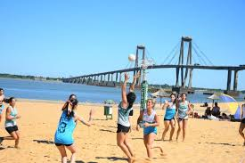
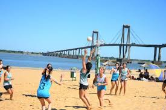

¿Qué es?
El deporte se creó en la Argentina en 1879 por el profesor de educación física Enrique Romero Brest bajo el nombre de Pelota al Cesto y se jugaba en las escuelas. Con el correr de los años, fue creciendo hasta llegar a los clubes. El 10 de julio de 1952 se fundó la Confederación Argentina de Pelota al Cesto y en 1974 comenzó a difundirse el deporte al resto del mundo y pasó a llamarse Cestoball. El cestoball es un deporte por equipos compuesto por 6 jugadoras o jugadores cada uno, que se enfrentan en un campo de 28 metros por 16 con un cesto en cada extremo. Cada cesto está ubicado dentro de la cancha, a 5 metros de la línea final, lo que permite jugar y encestar desde cualquier punto a su alrededor. La pelota no pica, y se traslada mediante pases.
¿Donde puedo jugarlo?
- Gevp(Villa del parque)
- Sitas(El Palomar)
- Ballester(Villa Ballestr)
- Apv(Versalles)
- Hacoaj(Tigre)
- Ciudad(Av.libertador)
Formas de jugarlo
 

- Beach cestoball
- Cestoball Adaptado
En el año 2003, el cestoball se convirtió en uno de los primeros deportes a nivel mundial en tener su modalidad sobre arena, realizándose ese año en Villa Gesell el primer torneo de la especialidad.
En noviembre de 2021 luego de 2 años de trabajo, investigación, capacitación y pruebas fue presentado oficialmente el Reglamento de Cestoball Adaptado, ampliando posibilidades para hacer realidad un Cestoball para todos.
Primer Mundial 2023
La selección argentina femenina y masculina de cestoball le dieron al país su primer título mundial de la historia en la competencia más importante del deporte que se desarrolló en la India en mayo del 2023. La final de la Copa del Mundo se jugó este 25 de mayo en la ciudad de Bangalore y hubo doble festejo albiceleste, con dos resonantes triunfos en los dos combinados que representaron a la Argentina.
Video de una final de cestoball
Esta final fue disputada en la Liga Nacional de Primera femenino que se llevo a cabo en Santiago del estero los dias 8,9,10 y 11 de septiembre. Fue una final entre los mejores equipos de todo el pais , Sitas y Gevp, el cual se consagro campeon sitas por un punto.